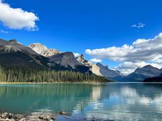
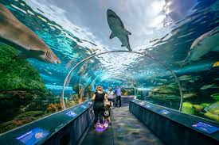
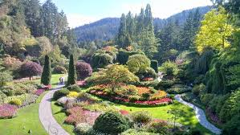

Niagra Falls
Niagara Falls, Ontario, is a Canadian city at the famous waterfalls of the same name, linked with the U.S. by the Rainbow Bridge. Its site on the Niagara River's western shore overlooks the Horseshoe Falls, the cascades' most expansive section. Elevators take visitors to a lower, wetter vantage point behind the falls. A cliffside park features a promenade alongside 520-ft.-high Skylon Tower with an observation deck.
.jpg)
Jasper National Park of Canada
Encompassing a wide wilderness area of Alberta province bounded by glaciers, lakes, and peaks like 11,033-foot-high Mt. Edith Cavell, Jasper National Park is located in the Canadian Rockies.

Ripley's Aquarium of Canada
Ripley's Aquarium of Canada could be an open aquarium in Toronto, Ontario, Canada. The aquarium is one of three aquariums owned and-operated by Ripley Amusement. It is found in downtown Toronto, fair southeast of the CN Tower. The aquarium has 5.7 million liters (1.25 million gallons) of marine and freshwater territories from all over the world. The shows hold more than 20,000 intriguing ocean and freshwater examples from more than 450 species.

Yoho National Park
Yoho National Park is a national park in Canada. It is located within the Rocky Mountains along the western slope of the Continental Divide of the Americas in southeastern British Columbia, bordered by Kootenay National Park to the south and Banff National Park to the east in Alberta. The word Yoho is a Cree expression of amazement or awe, and it is an apt description for the park's spectacular landscape of massive ice fields and mountain peaks, which rank among the highest in the Canadian Rockies.
The Buchart Gardens
The Butchart Gardens is a group of floral display gardens in Brentwood Bay, British Columbia, Canada, located near Victoria on Vancouver Island. The gardens receive over a million visitors each year. The gardens have been designated a National Historic Site of Canada.
